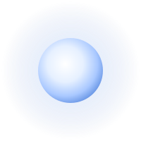

Ae'Uuvoria is the blue-white star at the center of the system, and it is also the system's creator. The star and the god are not two things. The star is Ae'Uuvoria.
As a Δ architect, Ae'Uuvoria governs nearly every local rule of its system: how magic works, what its planets are made of, and how life can take shape on them. It made six planets, each tied to one of the six major elements, and three of them harbor life.
Its name comes from the Au'Uuvor—the ancients—and roughly means “primordial divine light.” The prefix Ae' is the number zero in their counting: the core, the one that comes before all the others.
In the real sky, its closest match is the star Achernar.
Despite being such a hot star, Ae'Uuvoria has been around for ~6 billion earth years. This is because Architects are the gods of their systems and can control almost anything within their domain, Ae'Uuvoria simply decided to live longer for their people's sake.
Beings who exist outside of time. One of many, they created the universe and the β creators within it.
Makers and caretakers of great clusters of galaxies. They created the γ creators.
Each one is a galaxy, with a supermassive black hole as its core holding everything together. They begin as spirals. When galaxies merge, their minds merge too, into a single being. They create the stars.
Stars, the last level of creators. Each star is its architects. Some systems have more than one star, and so more than one Δ architect sharing the work.
Ae'Uuvoria once reached Oa'Veyra freely. That ended when a faction overloaded the core of the magic system and cut the creator off from the planet. To survive what followed, six five Au'Uuvori gave their lives to raise the barrier that still surrounds Oa'Veyra.
Since then, Ae'Uuvoria has turned its attention to the silicon life of Ia'Vorien. Only one link to Oa'Veyra remains: on the peak of the tallest mountain, which pierces the barrier, the Librarian Eo'Sevoria, last of the ancients, still keeps in contact with the creator.